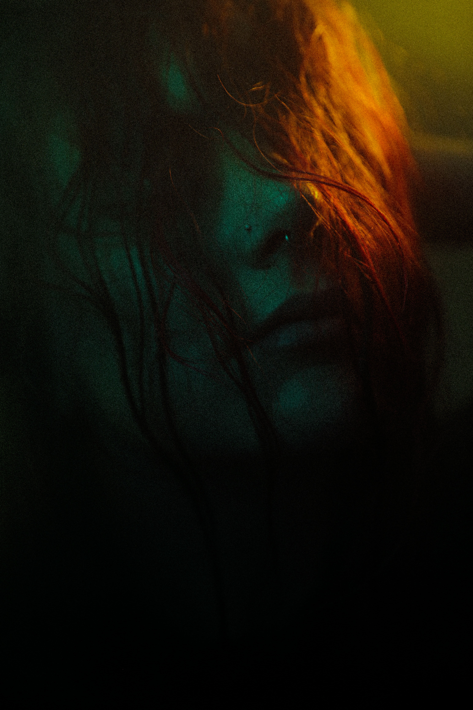

About Me
Jovana Đoković is a photographer educated at the Academy of Arts in Novi Sad.
Jovana’s artistic work focuses on capturing emotion in its rawest form. Through a mix of clarity and intentional blur, her photographs evoke nostalgia, introspection, and sensory connection. She aims to create images that are not only seen but felt inviting viewers into a quiet, personal dialogue with each moment she captures.
Her work has been shown in numerous group exhibitions, such as:
- Big FSU Contest for High School Creative Students, Dorćol Platz, Belgrade (2018)
- World Biennale of Student Photography, SKCNS Fabrika, Novi Sad (2021)
- Annual Exhibition of Young Visual Artists of Raška District, Cultural Center Ribnica, Kraljevo - Winner (2022)
- World Biennale of Student Photography, Academy of Arts, Novi Sad (2023)
In 2022, she held her debut solo exhibition, “Anemoia,” at Thrill Bar Gallery in Kraljevo.
Beyond her artistic projects, Jovana works professionally across events, photoshoots, and product photography, offering clients thoughtful, high-quality visual work. She is also the official photographer for Club Drop and Lollipop events, bringing both creativity and reliability to every assignment.
If you’d like to collaborate or book a session, feel free to reach out. You can explore more of her work on Instagram: @anemoia.7